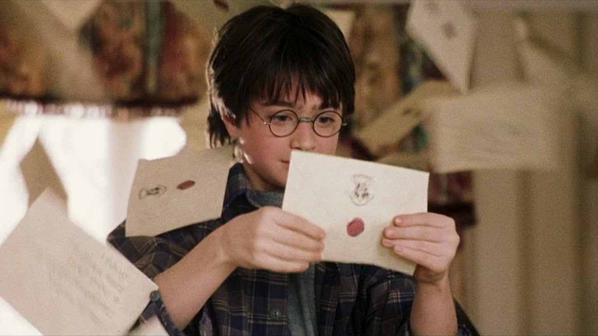

Фритрек и нулевой спринт: Подготовка к работе

ИнтересЭто было самое начало пути. На этом этапе важно было проникнуться основами и настроиться на учёбу. И, возможно, подумать, как новые знания могут повлиять на ваше будущее.
Начало обучения для меня было наполнено в равной степени сомнениями и интересом. С каждым новым уроком мне становилось всё интереснее погружаться в профессию веб-разработчика, но вместе с этим росли и сомнения в том, что я смогу справиться. Однако в итоге мне удалось их преодолеть.